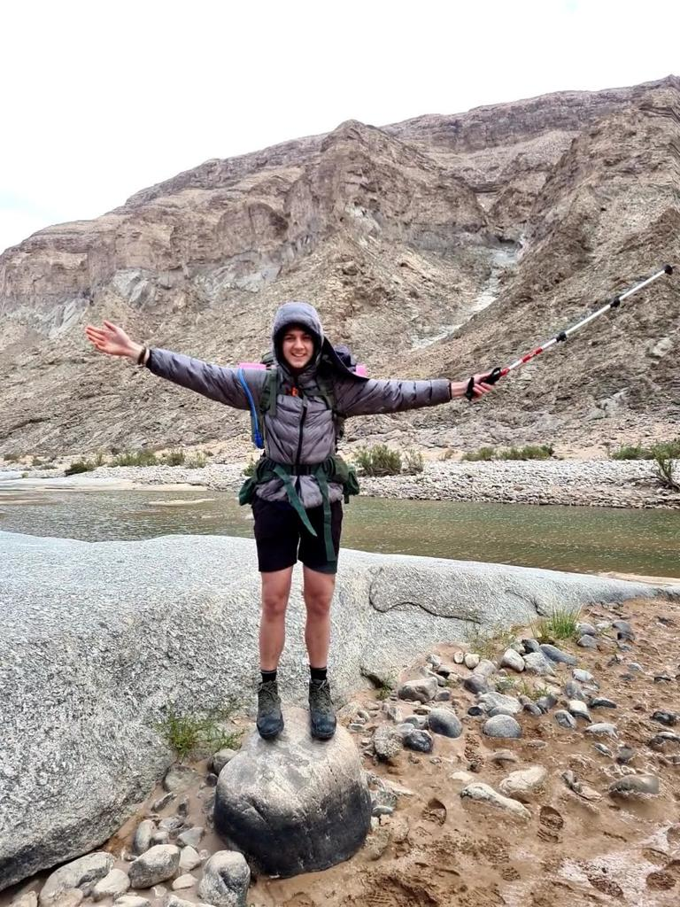
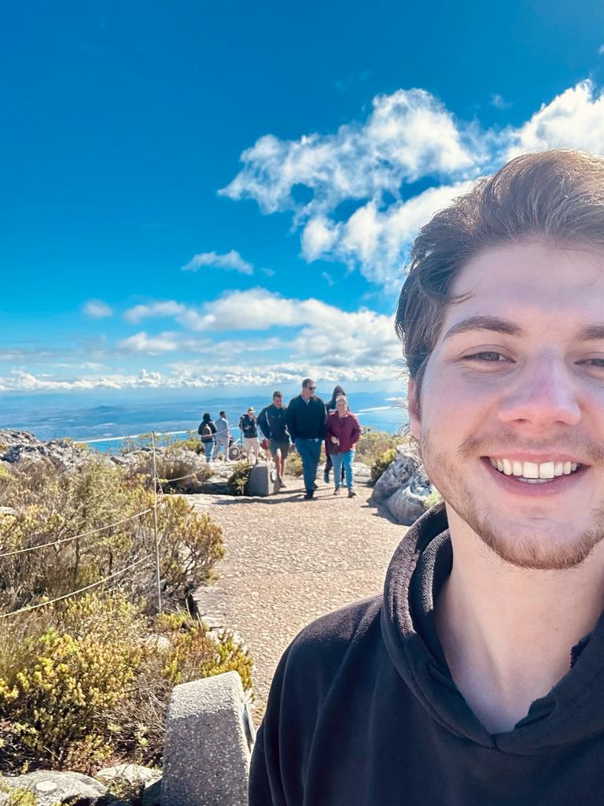
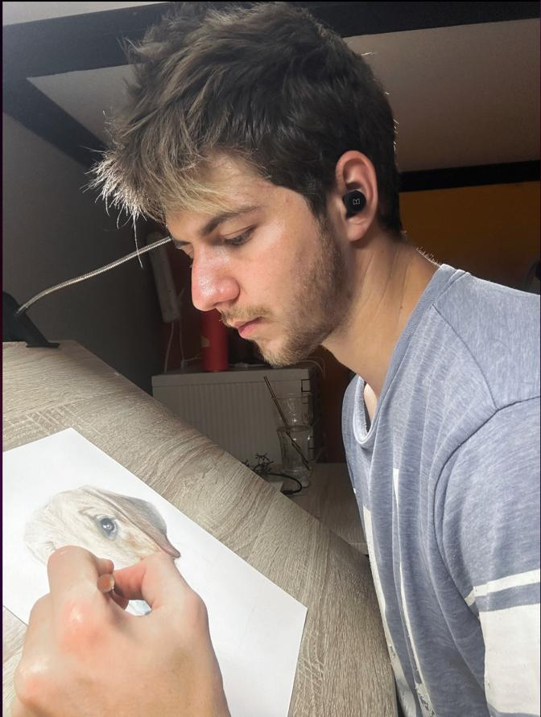
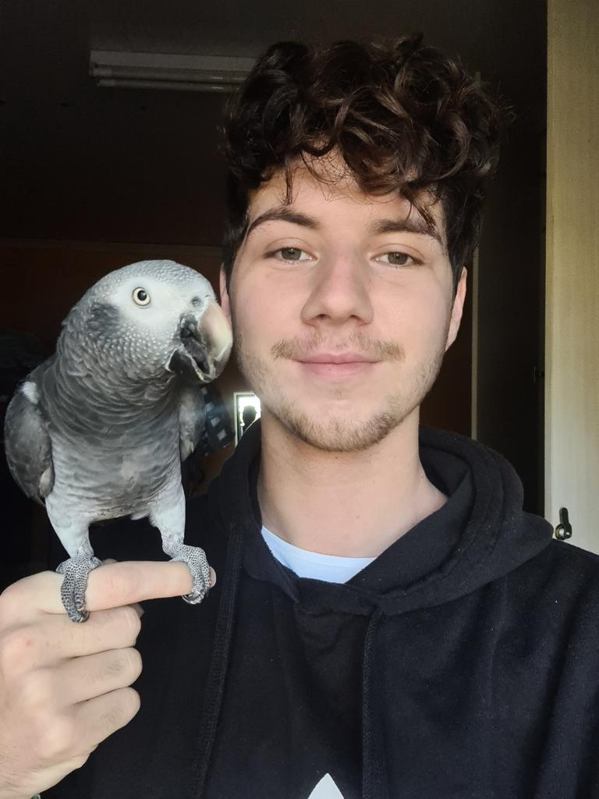

About me
Hello, art enthusiasts! I'm Reikert Wessels, a freelance artist who finds inspiration in both the wonders of nature and the joyful companionship of animals. When I'm not immersed in creating art or exploring the great outdoors, you'll often find me bonding with my feathered friend, Dexter, my cherished parrot.
Art has been an integral part of my life, serving as a vessel for self-expression and storytelling. It allows me to translate my emotions, experiences, and love for the world around me into visually captivating creations. As I delve into my artistic journey, the beauty of nature and the remarkable personalities of animals continue to shape my unique artistic style.
Hiking is not only a passion but also a way for me to immerse myself in the natural wonders that surround us. The sights, sounds, and scents of the wilderness energize my creativity, providing a wellspring of inspiration for my artwork. From the majestic mountains to the tranquil forests, these experiences find their way onto my canvas, giving life to breathtaking landscapes and capturing the essence of nature's enchantment.
But it's not just the grandeur of nature that captivates me; it's also the intricate beauty and playful spirits of animals that spark my imagination. My parrot, Dexter, holds a special place in my heart. His vibrant colors, charming antics, and unique personality have become a muse for many of my creations. The connection we share reminds me of the profound bond between humans and animals and the joy they bring to our lives.
As a freelance artist, I have been fortunate to collaborate with a diverse range of clients, sharing their visions and bringing their stories to life through art. Each project is an opportunity for me to merge my artistic expertise with the deep emotional connections we have with the natural world and the animals that inhabit it.
Thank you for taking the time to learn a bit about me and my artistic journey. I hope my artwork evokes a sense of wonder and encourages you to appreciate the beauty of nature and the precious connections we share with animals. Whether you're interested in collaborating, commissioning a piece, or simply want to share your love for art, nature, or our animal friends, I'd be thrilled to connect with you. Let's embark on a creative adventure together.


I'm a freelance artist who finds endless inspiration in the breathtaking landscapes I encounter during my hiking adventures. This is one of my main hobbies.

Through my vibrant creations, I strive to capture the beauty of nature and the profound connections we share with animals, inviting viewers to embrace the wonder and magic of the natural world.
